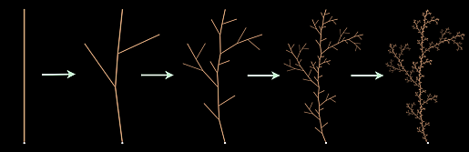

للكثير من الأزهار والأعشاب والأشجار بنية يمكن إستخدامها لخلق صور عن هذه النباتات مولدة بالحاسوب: يبدو الغصن مبدئياً كنسخة مصغرة عن النبتة بأكملها.
تستند الصورة المعروضة على اليمين على هذا المبدأ. في البدء، يتم اختيار نمط رسومي اساسي للنبتة، هذا الرسم يمثل هيكل التفرعات: النموذج الأولي. يتم بعدها خلق الصورة على النحو التالي. يتم استبدال كل تفصيل فردي من النموذج الأولي بنسخة أصغر. هذا يولد بنية أكثر دقة مماثلة للنبتة. وفي هذه البنية الجديدة، يتم استبدال كل تفصيل فردي بنسخة اصغر عن النموذج. فتظهر بنية أكثر دقة من سابقتها. يتم تكرار هذه العملية عدة مرات.

خلق نبتة بإستبدال متكرر للتفاصيل